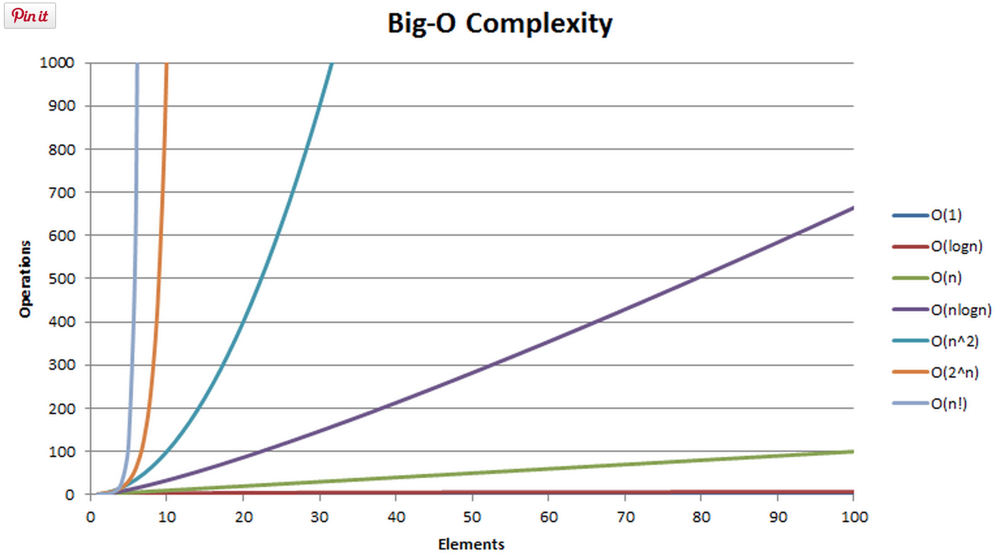

Big O Complexity
How quickly do things slow down?
Saturday PM, 10 October 2015
Big O complexity considers how efficient a program when it's faced with larger and larger inputs. It can be helpful to compare different Big O complexities graphically, showing the complexity, or the number of operations it takes to come up with a solution, on the y-axis versus the size of the input on the x-axis.
There seems to be a few Big O complexities that are especially common. They are:
- O(n) - Linear Complexity
- O(n2) - Quadratic Complexity
- O(logn) - Logarithmic Complexity
- O(n!) - Factorial Complexity
- O(na) - Polynomial Complexity
I know they don't sound too friendly to anybody who isn't part mathematician, but they're actually not too bad if you look at them in the context of an example. No really, I swear.
First, consider a function that adds together all the elements in an array.
Okay, now let's look at O(n2), quadratic complexity. This is going to be the dark teal line. You can see the complexity increases much more dramatically than O(n). Take a look at an example.
This returns every combination of pairs for a given list of numbers. For instance, if we give it [1,2,3], it will return [[1,1],[1,2],[1,3],[2,1],[2,2],[2,3],[3,1],[3,2],[3,3]]. This is O(n2) because for every n items in the list the function require n2 operations to complete the task. Larger inputs give the O(n2) much more work than they did in the function with O(n). Quadratic complexity seems to come up often for functions that involve nested loops.
Logarithmic complexity is where things start getting good. One way to get logarithmic complexity is to repeatedly divide by a constant. There is also such a thing as a binary search, which has logarithmic complexity. I found an example that involved a phone book, and I thought it was fantastic so I'm going to repeat it for you here. Say you wanted to ask a computer to look up a name for you in a phone book. Using a binary search, the computer would look up the name right in the middle of the phone book, and determine whether the name you're asking for comes before or after that name. Then it'll look up the name right in middle of either the half that came before or the half that came after, depending on where it determined the name would be. And it will continue to do this until it finds the name. That's called a binary search. In a phone book containing 3 names, it will take at most 2 comparisons. For 7 it will take at most 3. For 15 it takes 4. For 1,000,000 it takes 20. So that's what O(logn) looks like. It's the super chilled out brownish red line on the graph that's just too cool to freak out about larger inputs like the other lines. Pretty sweet.
There are a whole host of other Big O complexities, and some good people have written things that are really helpful in understanding them. I would highly recommend these two in particular.